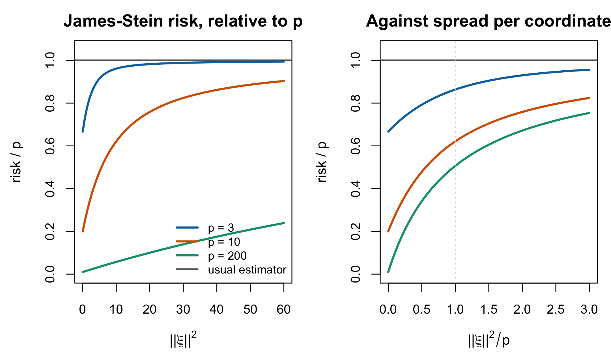

12 Empirical Bayes and the Shrinkage Tradition
Chapter 11 derived the EAP estimator and showed that it under-disperses. Both facts have been known outside psychometrics since the 1950s, under other names, with a body of results attached that item response theory has largely not imported.
This chapter makes the connection explicit. The claim it supports is narrow and worth stating at the outset: nothing about the shrinkage problem in IRT is specific to IRT. “We used EAP and it shrinks” is a sentence about a known trade-off with a known literature and known repairs, and the repairs are what Part VI is. Reading the two traditions as one also imports a warning: ranks are a separate decision target, and the conditions under which ranked posterior means fail must be checked rather than inferred from shrinkage alone.
12.1 Stein’s paradox
Estimate \(p\) independent normal means from one observation each, under summed squared error. The obvious estimator is the vector of observations. It is optimal among unbiased estimators and among translation-invariant ones, and for \(p \ge 3\) it is inadmissible: there is another estimator with smaller risk at every parameter value.
Stein (1956) proved the inadmissibility; James and Stein (1992, sec. 2) gave the explicit estimator. With \(X \sim N(\xi, \mathbf{I}_p)\),
\[ \varphi_1(X) = \left(1 - \frac{p-2}{\|X\|^2}\right) X \tag{12.1}\]
has risk \(p - \operatorname{E}[(p-2)^2/(p-2+2K)] < p\) for all \(\xi\), where \(p\) is the risk of the obvious estimator. They record the shape of the improvement precisely: the risk of Equation 12.1 is \(2\) at \(\xi = 0\) and rises gradually to \(p\) as \(\|\xi\|^2 \to \infty\), and for \(p \le 2\) the obvious estimator is admissible.
Read that risk-at-the-origin number in this book’s setting. If \(p\) is a class of 200 students whose abilities happen to sit near the population mean, the summed risk of scoring each one separately is 200, and of Equation 12.1 is 2. The improvement is not marginal and it is not a technicality about tail behaviour; it is a hundredfold at the point where the population is homogeneous. It also shrinks to nothing as the abilities spread out, which parallels the \(w_p \to 1\) limit in Section 11.4 from the risk side.

Figure 12.1 makes the dimension dependence explicit, and the right panel is the one to read. Comparing risks at a fixed \(\|\xi\|^2\) across different \(p\) is not comparing like with like, because a larger \(p\) spreads the same squared length over more coordinates. Held at a unit mean squared coordinate — the natural analogue of \(\sigma^2_\theta = 1\) — the James–Stein estimator carries \(86\%\) of the usual risk at \(p = 3\) and \(51\%\) at \(p = 200\). Dimension determines when the usual estimator becomes inadmissible; the displayed risk formula also shows that the magnitude of the improvement decreases as \(\|\xi\|^2\) grows.
Three qualifications keep this honest, and each of them recurs later.
The gain is in the sum, not in any coordinate. Equation 12.1 can be worse than the obvious estimator for a particular \(\xi_k\); what dominates is the total. That is the compound-decision structure of Section 12.2, and it is the precise sense in which optimality for the ensemble is not optimality for a person.
It borrows across unrelated quantities. Nothing in the theorem requires the \(p\) means to be related. This is what made the result a paradox rather than a technique, and in the IRT setting the borrowing is at least substantively motivated: persons are exchangeable draws from a population, which is the level-2 assumption of Equation 10.4.
Equation 12.1 is itself inadmissible. James and Stein say so in the same paragraph. Dominating the obvious estimator is a low bar, and the existence of a better estimator is not the same as having the right one — a point Chapter 17 makes again about the choice among posterior summaries.
12.2 The compound decision problem
Robbins’s (1992) empirical Bayes supplies the frame in which Equation 12.1 stops being a paradox. Suppose each \(\Theta_p\) is drawn from an unknown prior \(G\) and produces an observation through a known mechanism. Then the Bayes rule against \(G\) is optimal, and although \(G\) is unknown, the \(P\) observations are themselves a sample that carries information about it. Robbins’s construction replaces \(G\) by an empirical version built from the other observations and shows that the resulting rule approaches the Bayes risk as \(P\) grows.
The reframing is the contribution. Estimating 200 abilities is one decision problem with a 200-dimensional action, not 200 separate problems, and once it is posed that way the other 199 responses are obviously relevant to person \(p\): they say what population \(p\) came from. Shrinkage stops being a bias one tolerates and becomes the correct response to information that was there all along.
This is exactly the structure of Chapter 10. Level 2 says persons are draws from \(G\); MML estimates \(G\)’s parameters from all the data and plugs them in; the EAP is the Bayes rule against the estimated \(G\). Marginal maximum likelihood is parametric empirical Bayes, and the psychometric and statistical literatures are describing one procedure.
Rubin (1981) gives the framing that transfers most directly. Eight schools ran parallel randomized coaching experiments; the estimated effects varied; some of the variation is sampling noise and some is real. He notes that the largest observed effect “will commonly attract the most attention,” and that the interesting question is how much of it to believe. Replace schools by persons and coaching effects by abilities and the sentence is about the top of a class ranking. His three tools — sensitivity displays, simulation of the posterior of the largest effect, and posterior predictive checks of the model — are all applicable here and none is standard in IRT practice.
A translation table. The same objects carry different names in the two literatures, which is most of why the connection is missed. \(G\) is the population distribution or the prior; \(\sigma^2_\theta\) is the between-person variance or the prior variance or, in the parallel-experiments literature, the between-study variance \(\tau^2\); \(w_p\) is a person-specific shrinkage or inverse-variance weight, while \(\bar w\) is an ensemble reliability functional that equals a common \(w_p\) only in the constant-error working case; \(\operatorname{se}(\hat\theta_p)^2\) is the measurement error variance or the within-study variance; EAP is the posterior mean, the empirical Bayes estimate, the BLUP, or the random-effects estimate. Section 2.4 tabulates the first two columns; the third is this chapter’s.
12.3 Two ensemble questions raised by shrinkage
Optimality per person does not by itself settle either the spread or the ordering of the collection. Under-dispersion is general; rank disagreement is model-dependent. Part VI must therefore attach each repair to the loss and conditions it actually addresses.
12.3.1 They under-disperse
Proposition 11.1 already states the general identity: for any \(G\) and any likelihood, the posterior-mean ensemble has variance \(\sigma^2_\theta- \operatorname{E}[\operatorname{Var}(\theta_p\mid\mathbf u_p)]\). Nothing about normality or the Rasch model is used. Repeating it as a second numbered result would confuse chapter placement with result provenance. The failure follows from the law of total variance and therefore from nothing but the fact that a posterior mean is a conditional expectation. Louis (1984) states the consequence for the compound Gaussian model — posterior expectations “produce ensembles of estimates with a sample variance smaller than the posterior expected sample variance for parameters” — and proposes matching the first two moments instead, which gives weights on the data approximately the square root of the posterior-mean weights. Chapter 18 is that estimator.
The consequences are not confined to histograms. Any functional that depends on spread inherits the error: the proportion below a cut-score, the estimated variance component, the spread of a distribution reported as a finding. Chapter 1 opened with this.
12.3.2 Ranks require a stochastic-order check
Proposition 12.1 Ranking posterior means is not estimating ranks. Restated from Laird and Louis (1989)
Ranking a set of posterior means does not in general produce the optimal estimate of the ranks of the underlying parameters. Laird and Louis state it flatly: “generally the ‘best’ ranks do not correspond to the ranked estimates of the \(\theta\)s.” Two distinct mechanisms are at work — posterior means are shrunk toward a common value by person-specific amounts that depend on each person’s precision, and estimating ranks optimally requires processing the posterior distribution of the ranks, which is not a function of the posterior means alone.
The qualifier “in general” is load-bearing. Laird and Louis (1989, Appendix A) and Shen and Louis (1998, Theorem 2) identify an important exception: when posterior distributions are stochastically ordered, ranked posterior means, ranked expected ranks and modal ranks induce the same ordering.
That exception applies to the fixed-item Rasch model carried in this book. Conditional on the item parameters, the posterior based on total score \(r\) is
\[ p(\theta\mid r,\boldsymbol\beta) \propto g(\theta)\, \frac{e^{r\theta}}{\prod_i\{1+e^{\theta-\beta_i}\}} . \tag{12.2}\]
For \(r_2>r_1\), the ratio of the two posterior densities is proportional to \(e^{(r_2-r_1)\theta}\), which is increasing in \(\theta\). The posteriors therefore have the monotone-likelihood-ratio, hence stochastic, order. Conditional on known 2PL discriminations, the same argument uses the weighted score \(\sum_i\lambda_i u_{pi}\). Non-constant information changes uncertainty and the amount of local shrinkage, but it does not by itself overturn this exact ordering.
Under-dispersion and ranking must consequently be stated more carefully. A positive affine rescaling repairs ensemble variance exactly only in the constant-error Gaussian working case and cannot alter any ordering. If an ordering is already wrong — for example under different test forms, missing designs, non-ordered likelihoods, or after integrating shared item uncertainty — rescaling cannot repair it. Under the fixed common-form Rasch model, however, a separate rank estimator can change estimated rank values and uncertainty or the EDF assignment without changing the induced person ordering. Chapters 17–20 must first state which of these targets and regimes they address.
Goldstein and Spiegelhalter (1996) make the applied case in the institutional-comparison setting, where the object published is a league table: a hierarchical model yields both \(\operatorname{rank}(\hat u_j)\) and \(\operatorname{var}\{\operatorname{rank}(\hat u_j)\}\), and their argument is that publishing the former without the latter misrepresents what is known. Substitute students for schools and the argument is unchanged. Chapter 20 takes it up as a decision problem.
12.4 Deconvolution: estimating \(G\) without estimating anyone
There is a third route, and it is the frequentist counterpart of what Part V does with a Dirichlet process prior.
If the goal is \(G\) itself — not any person’s ability — then the person estimates are a detour. Efron (2016) poses it directly: an unknown prior density \(g(\theta)\) yields unobserved realizations \(\Theta_1,\dots,\Theta_N\), each producing an observable \(X_i\) through a known mechanism, and the problem is to recover \(g\) from the \(X_i\) alone. This is deconvolution, and Efron’s contribution is the practical one: the nonparametric convergence rates are “discouraging,” but modelling \(g\) as an exponential family — g-modelling — gives useful estimates at moderate sample sizes.
For the Rasch model the known mechanism is \(\hat\theta_p \approx \theta_p + \varepsilon_p\) with \(\varepsilon_p\) of known variance \(\operatorname{se}(\hat\theta_p)^2\), so the observed spread of ability estimates is the true distribution convolved with measurement error. Equation 8.4 is the first moment of that statement; deconvolution is the whole of it. This programme’s own IRW reliability work uses exactly this route to separate the distribution of true reliabilities from the noise in their estimates.
The relationship to Part V is close and worth being precise about rather than glib. Both deconvolution and a DPM prior on \(G\) estimate a distribution from noisy realizations; both must trade smoothness against fidelity; both are ill-posed in the same way. They differ in what they deliver — Efron’s is a point estimate of \(g\) with standard errors, the DPM gives a posterior over \(G\) from which any functional inherits uncertainty — and in what the flexibility costs. Chapter 14 puts them side by side.
12.5 Why IRT built this vocabulary separately
The two literatures developed in parallel for most of forty years, and the reason is not mysterious. IRT arrived at shrinkage from measurement: a test score is a fallible measure, the prior stabilizes it, and the goal was a better score for a person who would receive it. Empirical Bayes arrived from decision theory: many parameters, one loss, and the goal was a rule with good total risk. The first framing makes the person the unit and the ensemble invisible; the second makes the ensemble the unit and treats the individual estimate as a by-product.
Both framings are legitimate and they answer different questions, which is the entire content of Chapter 17. What the separation cost is that IRT inherited the estimator without all of the warnings: EAP ensembles under-disperse, and distributional, cut-score and rank decisions use losses that personwise squared error does not optimize. The ranking warning is conditional rather than universal; in common-form Rasch scoring the stochastic-order exception above must be carried forward.
12.6 Sources and provenance
Equation 12.1, the risk expression, the value \(2\) at the origin, the limit \(p\), the admissibility of the obvious estimator for \(p \le 2\), and the remark that Equation 12.1 is itself inadmissible were all read in James and Stein (1992, sec. 2). Per DECISIONS (a4) the work is cited as the 1961 original and locators are taken from the held 1992 reprint pagination. The priority for inadmissibility is Stein (1956), which James and Stein credit as their reference [14] and which is held; Section 12.1 attributes it accordingly.
The compound-decision framing is Robbins’s too, but it is not in the held document, and the distinction is worth keeping. What Section 12.2 argues from — an unknown prior \(G\), observations that carry information about it, an empirical replacement whose risk approaches the Bayes risk — is the construction the held reprint (1992) states directly. The phrase compound decision problem comes from a different Robbins paper, “Asymptotically subminimax solutions of compound statistical decision problems,” which the reprint cites as its reference [4] and which is not held. The section title therefore names the situation; the citation carries only the empirical Bayes argument, which is what the reprint supports.
Rubin (1981) is read at the level of his stated aims and the eight-schools setup, which is all the transfer argument uses.
Proposition 11.1 carries the general identity once; Louis (1984, sec. 2.1) is credited for the ensemble framing and the moment-matching repair, as in Section 11.9. Proposition 12.1 is Laird and Louis (1989), restated; the quoted sentence and the two mechanisms are from their § 1. Their Appendix A, and Shen and Louis (1998, Theorem 2), supply the stochastic-order exception used in Equation 12.2. The observation that a monotone rescaling cannot change an ordering is elementary; it does not establish that the starting ordering is wrong. Goldstein and Spiegelhalter (1996, sec. 3) supply \(\operatorname{var}\{\operatorname{rank}(\hat u_j)\}\) and the applied argument. Shen and Louis (1998, sec. 1) state the generic warning independently and cite four sources for it.
Efron (2016) is read for the problem statement and the g-modelling proposal; the mapping to the Rasch case is this book’s and is elementary.
Three sources the chapter would have used and does not hold. Efron and Morris (1975) on the baseball example, Morris (1983) on parametric empirical Bayes, and Carlin and Louis are named in the blueprint for this chapter, and a search of both the bibliography and the nine reference libraries confirms none is present. The chapter is therefore written without them: the baseball illustration is omitted, and the identification of parametric empirical Bayes with marginal maximum likelihood is argued from Section 10.5 and Robbins rather than from Morris.
One R5 route is available and is used to name the standard reference without describing its content. Shen and Louis (1998) cite Morris (1983) as the reference for parametric empirical Bayes as a route to robustness within a parametric family, and cite Laird and Louis (1989), Goldstein and Spiegelhalter (1996) and Morris and Christiansen (1996) together for the claim that “ranking posterior means can perform poorly” — an independent corroboration of Proposition 12.1 from a second held primary. Nothing further about Morris (1983) is asserted here, because nothing further has been read. Note also that the bibliography’s morris_using_2019 is Morris, White and Crowther on simulation studies — a different author and a different subject — and it is not a substitute for Morris (1983); confusing the two would be precisely the failure rule R1 exists to prevent.